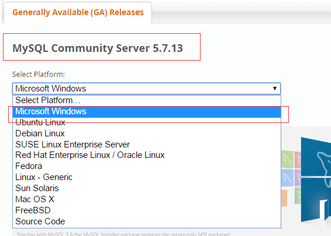
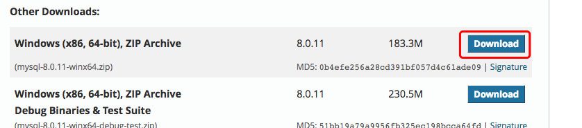
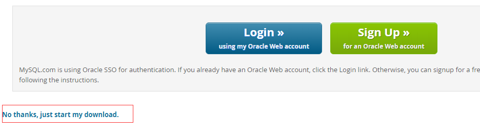
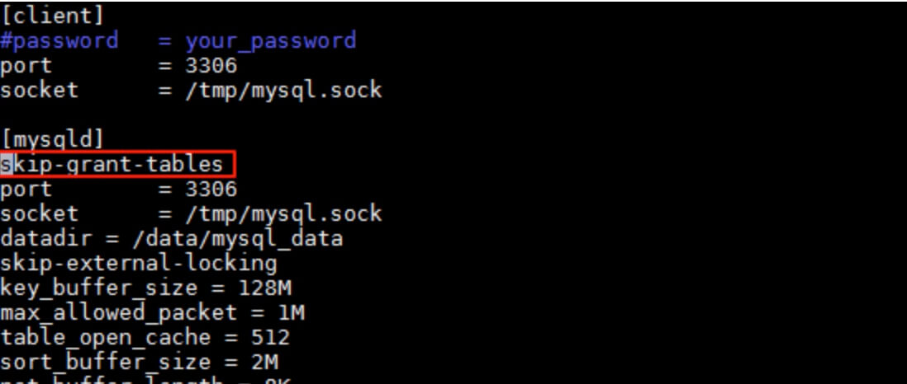

MySQL 安装
所有平台的 MySQL 下载地址为： MySQL 下载. 挑选你需要的 MySQL Community Server 版本及对应的平台。
注意：安装过程我们需要通过开启管理员权限来安装，否则会由于权限不足导致无法安装。
Linux/UNIX 上安装 MySQL
Linux平台上推荐使用RPM包来安装Mysql,MySQL AB提供了以下RPM包的下载地址：
- MySQL - MySQL服务器。你需要该选项，除非你只想连接运行在另一台机器上的MySQL服务器。
- MySQL-client - MySQL 客户端程序，用于连接并操作Mysql服务器。
- MySQL-devel - 库和包含文件，如果你想要编译其它MySQL客户端，例如Perl模块，则需要安装该RPM包。
- MySQL-shared - 该软件包包含某些语言和应用程序需要动态装载的共享库(libmysqlclient.so*)，使用MySQL。
- MySQL-bench - MySQL数据库服务器的基准和性能测试工具。
安装前，我们可以检测系统是否自带安装 MySQL:
rpm -qa | grep mysql
如果你系统有安装，那可以选择进行卸载:
rpm -e mysql // 普通删除模式 rpm -e --nodeps mysql // 强力删除模式，如果使用上面命令删除时，提示有依赖的其它文件，则用该命令可以对其进行强力删除
安装 MySQL：
接下来我们在 Centos7 系统下使用 yum 命令安装 MySQL，需要注意的是 CentOS 7 版本中 MySQL数据库已从默认的程序列表中移除，所以在安装前我们需要先去官网下载 Yum 资源包，下载地址为：https://dev.mysql.com/downloads/repo/yum/

wget https://dev.mysql.com/get/mysql57-community-release-el7-9.noarch.rpm rpm -ivh mysql57-community-release-el7-9.noarch.rpm yum install mysql-server
初始化 MySQL：
mysqld --initialize
启动 MySQL：
systemctl start mysqld
查看 MySQL 运行状态：
systemctl status mysqld
注意：如果我们是第一次启动 mysql 服务，mysql 服务器首先会进行初始化的配置。
此外,你也可以使用 MariaDB 代替，MariaDB 数据库管理系统是 MySQL 的一个分支，主要由开源社区在维护，采用 GPL 授权许可。开发这个分支的原因之一是：甲骨文公司收购了 MySQL 后，有将 MySQL 闭源的潜在风险，因此社区采用分支的方式来避开这个风险。
MariaDB的目的是完全兼容MySQL，包括API和命令行，使之能轻松成为MySQL的代替品。
yum install mariadb-server mariadbmariadb数据库的相关命令是：
systemctl start mariadb #启动MariaDB systemctl stop mariadb #停止MariaDB systemctl restart mariadb #重启MariaDB systemctl enable mariadb #设置开机启动
验证 MySQL 安装
在成功安装 MySQL 后，一些基础表会表初始化，在服务器启动后，你可以通过简单的测试来验证 MySQL 是否工作正常。
使用 mysqladmin 工具来获取服务器状态：
使用 mysqladmin 命令俩检查服务器的版本,在linux上该二进制文件位于 /usr/bin on linux ，在window上该二进制文件位于C:\mysql\bin 。
[root@host]# mysqladmin --version
linux上该命令将输出以下结果，该结果基于你的系统信息：
mysqladmin Ver 8.23 Distrib 5.0.9-0, for redhat-linux-gnu on i386
如果以上命令执行后未输入任何信息，说明你的Mysql未安装成功。
使用 MySQL Client(Mysql客户端) 执行简单的SQL命令
你可以在 MySQL Client(Mysql客户端) 使用 mysql 命令连接到Mysql服务器上，默认情况下Mysql服务器的密码为空，所以本实例不需要输入密码。
命令如下：
[root@host]# mysql
以上命令执行后会输出 mysql>提示符，这说明你已经成功连接到Mysql服务器上，你可以在 mysql> 提示符执行SQL命令：
mysql> SHOW DATABASES; +----------+ | Database | +----------+ | mysql | | test | +----------+ 2 rows in set (0.13 sec)
Mysql安装后需要做的
Mysql安装成功后，默认的root用户密码为空，你可以使用以下命令来创建root用户的密码：
[root@host]# mysqladmin -u root password "new_password";
现在你可以通过以下命令来连接到Mysql服务器：
[root@host]# mysql -u root -p Enter password:*******
注意：在输入密码时，密码是不会显示了，你正确输入即可。
Windows 上安装 MySQL
Windows 上安装 MySQL 相对来说会较为简单，你需要在 MySQL 下载中下载 Windows 版本的 MySQL 安装包。


点击 Download 按钮进入下载页面，点击下图中的 No thanks, just start my download. 就可立即下载：
下载完后，我们将 zip 包解压到相应的目录，这里我将解压后的文件夹放在 C:\web\mysql-8.0.11 下。
接下来我们需要配置下 MySQL 的配置文件
打开刚刚解压的文件夹 C:\web\mysql-8.0.11 ，里面有一个系统自带的配置文件 my-default.ini，复制该文件，并粘贴在同一目录下，设置新的文件为 my.ini，编辑 my.ini 配置以下基本信息：
[mysql] # 设置mysql客户端默认字符集 default-character-set=utf8 [mysqld] # 设置3306端口 port = 3306 # 设置mysql的安装目录 basedir=C:\wamp-all\mysql-5.7.13 # 设置mysql数据库的数据的存放目录 datadir=C:\wamp-all\sqldata # 允许最大连接数 max_connections=20 # 服务端使用的字符集默认为8比特编码的latin1字符集 character-set-server=utf8 # 创建新表时将使用的默认存储引擎 default-storage-engine=INNODB
接下来我们来启动下 MySQL 数据库：
以管理员身份打开 cmd 命令行工具，切换目录：
cd C:\web\mysql-8.0.11\bin
输入以下安装命令：
mysqld install
启动输入以下命令即可：
net start mysql
注意: 在 5.7 需要初始化 data 目录：
cd C:\web\mysql-8.0.11\bin mysqld --initialize-insecure初始化后再运行 net start mysql 即可启动 mysql。


argyi
150***62378@163.com
MySQL 重置密码
如果你忘记 MySQL 密码，可以通过修改 my.cnf 文件添加 skip-grant-tables 来重置密码，步骤如下：
1、打开 my.cnf 配置文件，找到 [mysqld] ，然后在该行下面添加以下参数：
重启 MySQL 服务：
登录 MySQL，此时不需要密码，直接回车:
更改 root 密码 为 123456：
mysql> use mysql; mysql> update user set authentication_string=password("123456") where user='root'; mysql> flush privileges; # 刷新权限注意密码字段名 5.7 版本的是 authentication_string，之前的为 password。
修改完后，记得注释掉 my.cnf 中的 skip-grant-tables 参数，重启 MySQL 服务，就可以用你设置的密码登录了。
argyi
150***62378@163.com
tianqixin
429***967@qq.com
关闭 MySQL 服务器：
进入目录，以安全模式启动 MySQL
启动后， root 用户以空密码登录 mysql：
# mysql -u root mysql> update mysql.user set password=PASSWORD('123456') where User='root'; # 修改密码 mysql> flush privileges; # 刷新权限 mysql> quit启动 MySQL：
这是就可以使用新密码 123456 登录了。
如果你知道密码，可以使用以下命令：
tianqixin
429***967@qq.com